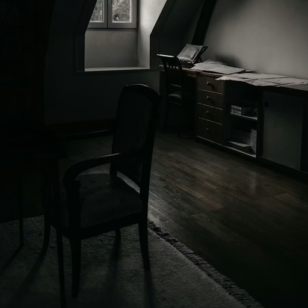
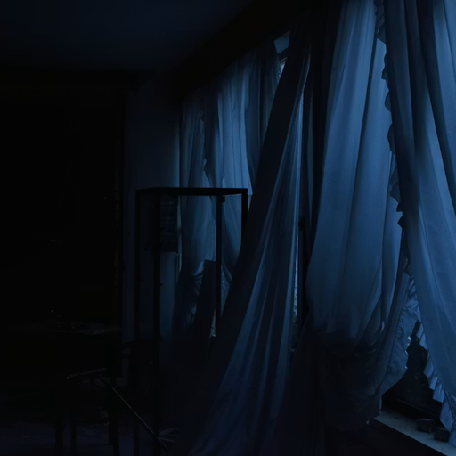
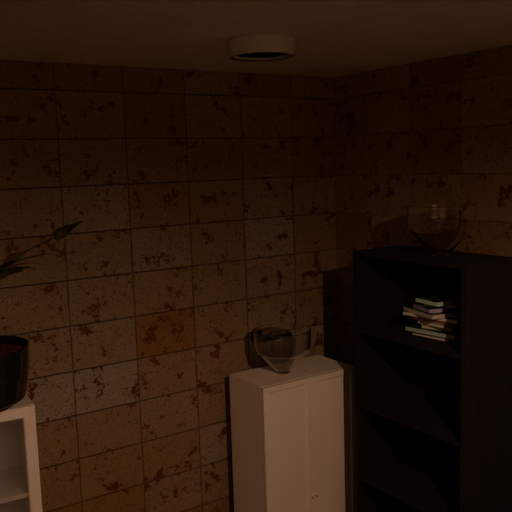
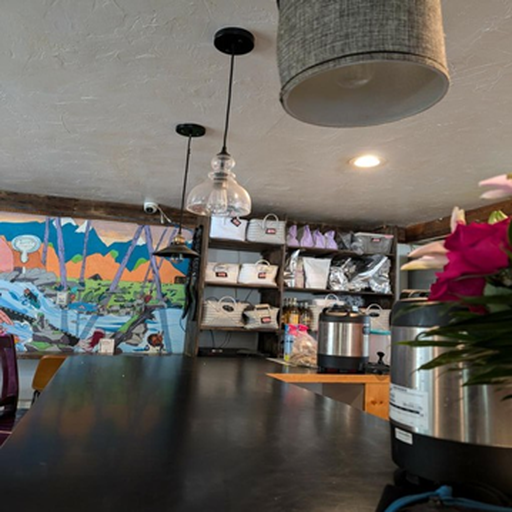
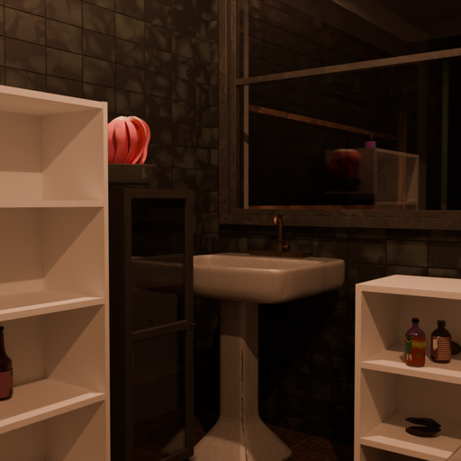
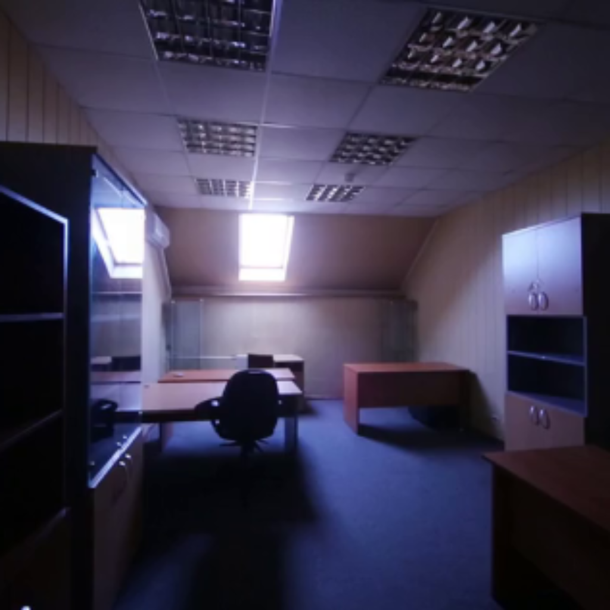
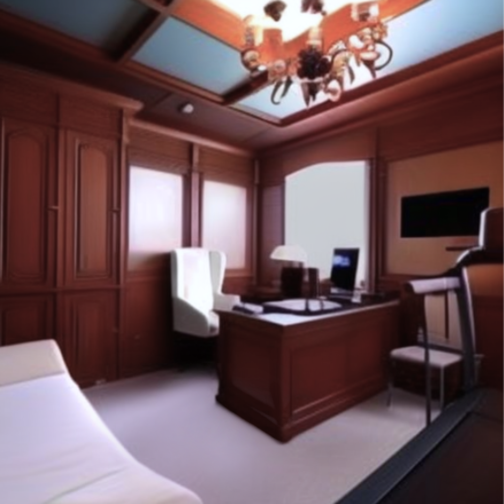
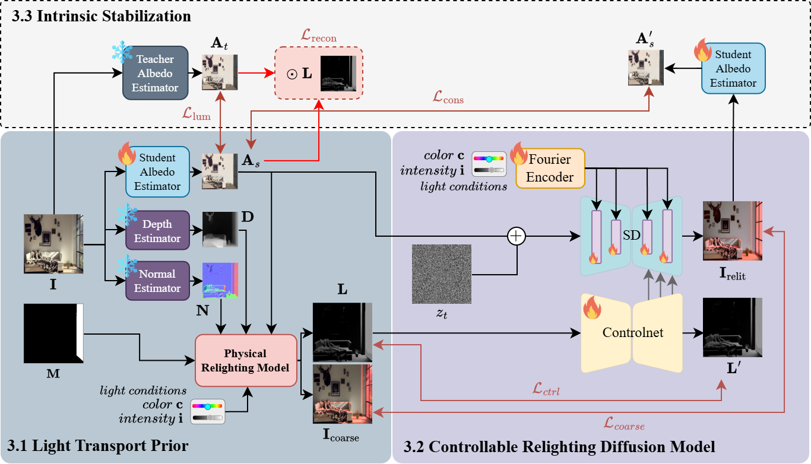

Image-based indoor scene relighting remains challenging due to the complex interplay between cluttered geometry and local illumination, requiring precise modeling of light position, color, and intensity. Existing data-driven methods implicitly learn this relationship via paired multi-illumination datasets. Nevertheless, this data is costly and fails to scale, which is essential for accurate light-source-level control. Conversely, inverse-rendering methods reduce the data dependency by incorporating physical priors; however, they lack the robustness of intrinsic estimation in challenging conditions.
In this paper, we present FreeLit, a paired-free framework for controllable indoor relighting that explicitly manipulates light-source location, color, and intensity. Instead of relying on paired supervision, we construct a physics-guided illumination prior from intrinsic scene properties, generating a structured lightmap along with a pseudo-relit image to guide diffusion-based synthesis. To address instability in intrinsic estimation, especially in low-light scenes, we introduce a relighting-guided intrinsic stabilization strategy that enforces illumination-invariant reflectance through structure-aware distillation and consistency constraints. Furthermore, we propose controllability-oriented evaluation metrics to quantify alignment with user-specified illumination color and intensity. Experimental results demonstrate that FreeLit achieves stable, physically consistent, and controllable relighting, with improved robustness in low-light indoor scenes, without requiring paired supervision.

FreeLit relights an indoor scene in three stages. (1) Light Transport Prior. From the input image we estimate albedo, depth, and surface normals, then render a physical lightmap with a relighting model, giving an explicit and controllable prior over light position, color, and intensity. (2) Controllable Relighting Diffusion. The lightmap and normals condition a ControlNet-guided diffusion model, while light color and intensity are injected through a Fourier-encoded conditioning branch, so the relit image follows the user's light controls. (3) Intrinsic Stabilization. A teacher-student albedo scheme keeps materials consistent across illuminations, preventing the diffusion model from baking lighting into surface color.
FreeLit gives parametric control over the intensity of light sources. Note how light phenomena are consistent across different intensities, allowing for interactive editing.
Our method can create colored illumination according to user input. Use the colored slider to adjust the color of the light source.